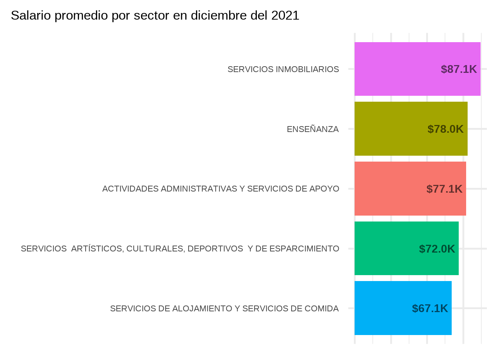

library(tidyverse) # para flujo de trabajo con datos
library(sf) # para trabajar con datos espaciales
library(lubridate) # para trabajar con fechas
library(scales) # para formatos varios
library(showtext) # para cambiar las fuentes del texto
library(stringi) # para manipulación de texto
library(gganimate) # para animar gráficas
library(gifski) # para renderizarEste es el primer post en este blog creado con quarto y a modo de prueba voy a realizar un análisis usando las bases de datos del Ministerio de Desarrollo productivo. Este análisis se realiza en el contexto de un trabajo práctico para una diplomatura. La idea es revisar aspectos de manipulación de datos, la preparación previa de los datos o, cómo yo le digo, el “amasado” de datos, y de visualización, una de las formas más eficientes (y divertidas) de comunicar y darle vida a los datos. Cabe señalar que no voy a ahondar en detalles técnicos con respecto a funciones.
Para comenzar vamos a cargar las librerias que usaremos a lo largo del documento.
Sobre los datos
Los datos corresponden al salario bruto promedio de los asalariados registrados, por sector de actividad (letra) y departamento (de acuerdo al domicilio donde vive la persona trabajadora). En este análisis vamos a considerar el universo de “total de empresas” (sector privado junto con empresas públicas). Estos datos tienen una frecuencia mensual y van desde el 2014 hasta la actualidad.
A continuación cargamos los datos necesarios.
# archivo con información georeferenciada de los departamentos del país (este es un archivo otorgado y procesado para la realización del análisis)
data_deptos_ARG <- read_sf("data/departamentos_arg.geojson")
# salario promedio por depto/partido y letra (total empresas)
salario_prom_depto_letra <- read_csv("https://cdn.produccion.gob.ar/cdn-cep/datos-por-departamento/salarios/w_mean_depto_tot_emp_letra.csv")
# salario promedio depto (total empresas)
salario_prom_depto <- read_csv("https://cdn.produccion.gob.ar/cdn-cep/datos-por-departamento/salarios/w_mean_depto_tot_emp.csv")
# diccionario deptos
dicc_deptos <- read_csv("https://cdn.produccion.gob.ar/cdn-cep/datos-por-departamento/diccionario_cod_depto.csv")
# diccionario letras
dicc_letras <- read_csv("https://cdn.produccion.gob.ar/cdn-cep/datos-por-departamento/diccionario_clae2.csv")Veamos primero una gráfica inicial de los datos geográficos que nos proveen, deberíamos ver todos los departamentos del país.
ggplot(data_deptos_ARG) +
geom_sf() +
theme_void()
Perfecto!, ahora comencemos con un poco de EDA. Veamos los datos de salarios para un año en particular
# vamos a observar únicamente el año 2021
salarios_2021 <- salario_prom_depto %>%
# year es una función de lubridate
filter(year(fecha)==2021)
head(salarios_2021)# A tibble: 6 x 4
fecha codigo_departamento_indec id_provincia_indec w_mean
<date> <dbl> <dbl> <dbl>
1 2021-01-01 2000 2 121888.
2 2021-01-01 6007 6 66779.
3 2021-01-01 6014 6 62485.
4 2021-01-01 6021 6 88491.
5 2021-01-01 6028 6 77481.
6 2021-01-01 6035 6 82504.# de acuerdo al marco metodológico y las deficiones de los
# indicadores de la fuente de datos, los valores de -99 hacen
# referencia a datos provenientes de una o dos observaciones
# (puestos de trabajo) para preservar secreto estadístico
# filtramos los casos -99 y nos quedamos con el mes de diciembre
salarios_dic_2021 <- salarios_2021 %>%
filter(w_mean > 0, fecha == "2021-12-01")
# observamos el resumen de w_mean para ver que no hayan casos raros
summary(salarios_dic_2021$w_mean) Min. 1st Qu. Median Mean 3rd Qu. Max.
70443 112318 132916 137557 151941 357702 A continuación vamos a realizar el mapa coroplético de salarios de diciembre 2021 con la finalidad de responder a la pregunta:
¬øCuáles son los departamentos con mayor salario promedio? ü§î
# primero revisamos que la clave para el join tiene el mismo tipo en ambos DF
typeof(data_deptos_ARG$codigo_departamento_indec)[1] "character"typeof(salarios_dic_2021$codigo_departamento_indec)[1] "double"typeof(data_deptos_ARG$codigo_departamento_indec)==typeof(salarios_dic_2021$codigo_departamento_indec)[1] FALSE# corregimos el tipo
data_deptos_ARG <- data_deptos_ARG %>%
mutate(codigo_departamento_indec = as.numeric(codigo_departamento_indec))
# agregamos la información de salarios para cada depto
deptos_salario_dic_2021 <- data_deptos_ARG %>%
left_join(salarios_dic_2021)
# graficamos
ggplot(deptos_salario_dic_2021) +
geom_sf(aes(fill = w_mean)) +
labs(fill = "Salario promedio") +
# usamos la paleta de colores viridis cuya principal
# característica es la accesibilidad
scale_fill_viridis_c(option = "viridis") +
theme_void()
Como se puede observar en el mapa, el salario promedio es mayor en el sur del país (o la Patagonia Argentina).
Pero‚Ķ ¬øesta distribuci√≥n siempre fue as√≠? ü§î
Veamos la distribución del salario promedio pero para el 2014
salarios_dic_2014 <- salario_prom_depto %>%
filter(year(fecha)==2014) %>%
# filtramos los casos -99 y nos quedamos con el mes de diciembre
filter(w_mean > 0, fecha == "2014-12-01")
# agregamos la información de salarios para cada depto
deptos_salario_dic_2014 <- data_deptos_ARG %>%
left_join(salarios_dic_2014)
# graficamos
ggplot(deptos_salario_dic_2014) +
geom_sf(aes(fill = w_mean)) +
labs(fill = "Salario promedio") +
scale_fill_viridis_c(option = "viridis") +
theme_void()
Podemos observar que la distribución es similar, observando un leve pero distinguible aumento en el salario promedio a nivel territorial en el centro y este del país, además de un incremento en el rango de salarios mínimo y máximo.
A continuación vamos a ver la evolución del promedio del salario en cada departamento. Para esto vamos a analizar los mismos puntos temporales de antes: diciembre del 2014 y diciembre del 2021.
# preparamos los datos
data_salarios_2014_2021 <- salario_prom_depto %>%
filter(fecha == "2014-12-01" | fecha == "2021-12-01") %>%
mutate(anio = year(fecha)) %>%
select(codigo_departamento_indec, w_mean, anio) %>%
pivot_wider(names_from = anio,
values_from = w_mean,
names_prefix = "anio_") %>%
# filtramos departamentos que tienen valores -99 o nulos
filter(!is.na(codigo_departamento_indec)) %>%
filter(!is.na(anio_2014), anio_2014 > 0) %>%
filter(!is.na(anio_2021), anio_2021 > 0) %>%
# Calculamos el incremento en porcentaje
mutate(diff = (anio_2021 - anio_2014) / anio_2014 * 100)
# agregamos la información de salarios para cada depto
deptos_salario_diff <- data_deptos_ARG %>%
left_join(data_salarios_2014_2021)
# graficamos
ggplot(deptos_salario_diff) +
geom_sf(aes(fill = diff)) +
labs(fill = "% aumento") +
scale_fill_viridis_c(option = "viridis") +
theme_void() +
theme(
plot.title.position = "plot"
)
Este mapa muestra la evolución en porcentaje del crecimiento de salario en cada departamento. Una posible lectura de este mapa es que el crecimiento del salario promedio se dio de forma semi uniforme con algunas excepciones.
En el mapa podemos ver que hay departamentos con un aumento del salario de hasta 13 veces y en otros de hasta 5 veces.
Pasemos a la siguiente pregunta…
¬øCuáles son los 5 sectores de actividad con salarios más bajos? ü§î
Para responder a esta pregunta vamos a utilizar los datos de salario promedio por sector y letra. Nos vamos a enfocar en el año 2021 y vamos a comparar estos sectores con los 2 sectores de mayor salario del mismo año.
# limpiamos diccionario de letras
dicc_letras <- dicc_letras %>%
select(letra, letra_desc) %>%
unique()
# filtramos el año a analizar
salario_prom_sector_2021 <- salario_prom_depto_letra %>%
filter(year(fecha)==2021) %>%
# cruzamos con el diccionario de letras
left_join(dicc_letras) %>%
# agrupamos por sector
group_by(letra_desc) %>%
# calculamos el salario promedio por sector (promedio del año)
summarise(salario_promedio = mean(w_mean, na.rm = TRUE)) %>%
arrange(salario_promedio)
last_row_idx <- salario_prom_sector_2021 %>%
nrow()
## Loading Google fonts (https://fonts.google.com/)
font_add_google("Roboto condensed", "robo")
## Automatically use showtext to render text
showtext_auto()
# graficamos los 5 sectores de actividad con salarios más bajos del 2021
ggplot(salario_prom_sector_2021 %>% slice(c(1:5,last_row_idx-1, last_row_idx)),
aes(x = fct_reorder(letra_desc, -salario_promedio),
y = salario_promedio)) +
geom_col(aes(fill = salario_promedio < 100000)) +
geom_text(aes(label = scales::dollar(salario_promedio,
accuracy = .01,
big.mark = ".",
decimal.mark = ","),
hjust = ifelse(salario_promedio < 100000,-0.1,1.1),
color = salario_promedio < 100000),
fontface = "bold",
size=7) +
coord_flip(clip="off") +
scale_color_manual(values = c("white","black")) +
scale_fill_manual(values = c("grey70","#D4C7FF")) +
guides(fill="none",color="none") +
labs(x = "none",
title = "Los 5 sectores con salario promedio más bajo en el 2021",
subtitle = "En comparación a los 2 sectores con salario promedio más altos del mismo año") +
theme_minimal(base_family = "robo", base_size = 20) +
theme(
axis.text.x = element_blank(),
axis.title = element_blank(),
panel.grid = element_blank(),
axis.text.y = element_text(face="bold"),
plot.title.position = "plot"
)
A partir de esto nos surge la siguiente pregunta…
¬øEsto siempre fue as√≠? ü§î
Para esto vamos a ver los 5 sectores con menor salario a lo largo del tiempo. En este caso vamos a hacer uso de la librería gganimate que nos permite extender ggplot agregando animación a nuestras visualizaciones. Lo más interesante es que basta con agregar 5 líneas de código a lo que veníamos haciendo con ggplot y luego con la función animate agregamos los parámetros finales como por ejemplo la duración del gif.
# filtramos los sectores a analizar
salario_prom_sector_evol <- salario_prom_depto_letra %>%
group_by(fecha, letra) %>%
summarise(salario_promedio = mean(w_mean, na.rm=T)) %>%
mutate(Rank = rank(salario_promedio)) %>%
filter(Rank <= 5) %>%
arrange(fecha, Rank) %>%
# cruzamos con el diccionario de letras
left_join(dicc_letras) %>%
mutate(Rank = as.factor(Rank))
# graficamos
anim <- ggplot(salario_prom_sector_evol) +
geom_col(aes(x = fct_reorder(Rank, salario_promedio),
y = salario_promedio,
fill = letra_desc,
group = letra_desc),
width = 0.7) +
geom_text(aes(x = fct_reorder(Rank, salario_promedio),
y = 0,
label = letra_desc, group = letra_desc),
hjust = 0,
size = 3,
family = "robo") +
coord_flip(clip="off") +
guides(fill = "none") +
labs(y = "Salario Promedio") +
theme_minimal() +
theme(axis.title.y = element_blank(),
axis.text.y = element_blank(),
axis.ticks.y = element_blank(),
axis.text.x = element_text(family = "robo"),
axis.title.x = element_text(family = "robo"),
plot.margin = unit(c(5,10,5,0), 'lines')) +
# a partir de acá hacemos uso de gganimate
ggtitle('Mostrando los 5 sectores con salario promedio más bajo en: {closest_state}') +
transition_states(fecha, state_length = 0, transition_length = 2) +
enter_fly(x_loc = 0, y_loc = 0) +
exit_fly(x_loc = 0, y_loc = 0) +
ease_aes('quadratic-in-out')
animate(anim, width = 700, height = 500,
fps = 25, duration = 40, rewind = FALSE)En este gráfico podemos observar que de los 5 sectores con menor salario, 4 se mantienen históricamente (entre ellos el sector de actividades relacionadas a la enseñanza).
Veamos cómo evolucionaron los salarios en cada sector usando otra alternativa. Para esto voy a hacer una de mis visualizaciones favoritas… una “dumbbell chart” (aún no encuentro una traducción que me convenza… ¿gráfico de mancuernas? ¿de pesas?). El objetivo de esta visualización es poder comparar el crecimiento del salario promedio en cada sector desde el 2018 al 2021.
# preparamos los datos
salario_sector_evol <- salario_prom_depto_letra %>%
left_join(dicc_letras) %>%
mutate(anio = year(fecha)) %>%
filter(anio %in% c(2018,2021)) %>%
filter(!is.na(letra_desc)) %>%
group_by(letra_desc, anio) %>%
summarise(salario_promedio = mean(w_mean, na.rm = TRUE)) %>%
# usamos la función str_wrap para "achicar" un poco el ancho
# de los textos
mutate(letra_2 = str_wrap(letra_desc,50),
anio = as.factor(anio),
salario_promedio_K = salario_promedio / 1000)
# para las lineas del salario promedio del año
promedio_2018_2021 <- salario_prom_depto_letra %>%
left_join(dicc_letras) %>%
mutate(anio = year(fecha)) %>%
filter(anio %in% c(2018,2021)) %>%
filter(!is.na(letra_desc)) %>%
group_by(anio) %>%
summarise(salario_promedio = mean(w_mean, na.rm = TRUE)) %>%
mutate(salario_promedio_K = salario_promedio / 1000) %>%
# generamos un vector con ambos valores
pull(salario_promedio_K)
# para la dumbbell chart hacemos uso de dos geometrías:
# geom_line y geom_point
ggplot(salario_sector_evol, aes(x = salario_promedio_K,
y = reorder(letra_2, salario_promedio_K),
color = anio)) +
geom_line(aes(group = letra_2), size = 2, color = "grey70") +
# graficamos líneas verticales para el promedio anual
geom_vline(xintercept = promedio_2018_2021,
alpha = .3, linetype = "dotdash", size = 1) +
geom_point(size = 5) +
geom_text(aes(label = scales::dollar(salario_promedio_K, suffix = "K", accuracy = 1),
hjust = ifelse(anio==2018,1.3,-0.3)),
alpha = .7,
size = 7,
show.legend = FALSE) +
scale_x_continuous(limits = c(0,220), expand = c(.2,0)) +
scale_color_manual(values = c("#8C826D","#D9AF5B")) +
labs(x = NULL, y = NULL, color = "Año") +
theme_minimal(base_family = "robo", base_size = 20) +
theme(
legend.position = "top",
axis.text.x = element_blank(),
panel.grid.major.x = element_blank(),
panel.grid.minor.x = element_blank(),
axis.text.y = element_text()
)
De la visualización podemos ver que el crecimiento fue mayor en sectores con salarios altos.
Actualización
el 28 de julio se agregaron las fuentes de datos correspondientes a los salarios por clae (sectores de actividad) por lo que podemos hacer un análisis más detallado de las actividades. Claramente este dataset va a tener muchas más filas que nuestro primer dataset el cual contenía información por letra o sector de actividad.
Carguemos los datos.
datos_clae <- read_csv("https://cdn.produccion.gob.ar/cdn-cep/datos-por-departamento/salarios/w_mean_depto_tot_emp_clae2.csv")veamos cuántas filas tiene nuestro dataframe.
nrow(datos_clae)[1] 3063963datos_clae %>% head(10)# A tibble: 10 x 5
fecha codigo_departamento_indec id_provincia_indec clae2 w_mean
<date> <dbl> <dbl> <dbl> <dbl>
1 2014-01-01 2000 2 1 13085.
2 2014-01-01 2000 2 2 10081.
3 2014-01-01 2000 2 3 17837.
4 2014-01-01 2000 2 5 57688.
5 2014-01-01 2000 2 6 62211.
6 2014-01-01 2000 2 7 50522.
7 2014-01-01 2000 2 8 50411.
8 2014-01-01 2000 2 9 41279.
9 2014-01-01 2000 2 10 16659.
10 2014-01-01 2000 2 11 23518.Inicialmente podemos hacer uso de los IDs de sectores identificados anteriormente para el diciembre del 2021. Para esta fecha los 5 sectores con menor salario se identifican por las letras: I, P, N, L, R. Usemos esta información para realizar los filtros correspondientes.
# volvemos a cargar el diccionario de clae/letras
# pero esta vez no limpiamos el dataset
dicc_clae <- read_csv("https://cdn.produccion.gob.ar/cdn-cep/datos-por-departamento/diccionario_clae2.csv")
salario_prom_actividad_2021 <- datos_clae %>%
filter(fecha == "2021-12-01") %>%
left_join(dicc_clae) %>%
filter(letra %in% c("I","P","N","L","R")) %>%
group_by(letra_desc, clae2_desc) %>%
summarise(salario_promedio = mean(w_mean, na.rm = T) / 1000)
# visualicemos estos datos
ggplot(salario_prom_actividad_2021,
aes(x = fct_reorder(clae2_desc, salario_promedio),
y = salario_promedio,
fill = letra_desc)) +
geom_col() +
geom_text(aes(label = scales::dollar(salario_promedio,
suffix = "K",
accuracy = .1)),
hjust = 1.1,
fontface = "bold",
alpha = .6,
size = 8) +
coord_flip() +
ggtitle("Salario promedio por actividad/clae en diciembre del 2021")+
labs(x = NULL, y = NULL, fill = "Sector") +
guides(x = "none") +
theme_minimal(base_size = 22) +
theme(
legend.position = "bottom",
legend.direction = "vertical",
plot.title.position = "plot"
)
Comparemos con la agrupación por sectores (que ya habíamos calculado anteriormente).
salario_prom_letra_2021 <- datos_clae %>%
filter(fecha == "2021-12-01") %>%
left_join(dicc_clae) %>%
filter(letra %in% c("I","P","N","L","R")) %>%
group_by(letra_desc) %>%
summarise(salario_promedio = mean(w_mean, na.rm = T) / 1000)
# visualicemos estos datos
ggplot(salario_prom_letra_2021,
aes(x = fct_reorder(letra_desc, salario_promedio),
y = salario_promedio,
fill = letra_desc)) +
geom_col() +
geom_text(aes(label = scales::dollar(salario_promedio,
suffix = "K",
accuracy = .1)),
hjust = 1.1,
fontface = "bold",
alpha = .6,
size = 8) +
coord_flip() +
ggtitle("Salario promedio por sector en diciembre del 2021")+
labs(x = NULL, y = NULL) +
guides(x = "none", fill = "none") +
theme_minimal(base_size = 22) +
theme(
plot.title.position = "plot"
)
Claramente la desagregación de estos datos nos muestra un patrón distinto.
Próximamente seguiremos con el análisis a nivel departamental de estos datos….